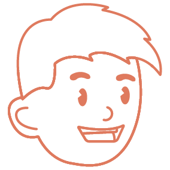

Mis Redes Sociales
Comparto mis ilustraciones a través de plataformas como INSTAGRAM y BEHANCE. Utilizo Instagram porque me permite llegar a una audiencia diversa y global de manera visualmente dinámica, aprovechando su formato para compartir procesos, detalles de mis ilustraciones y conectar con otros artistas en tiempo real. Es una herramienta clave para construir una comunidad alrededor de mi arte.
Por otro lado, Behance funciona como un portafolio especializado, donde puedo mostrar mis proyectos completos de manera más profunda. Es una plataforma que me permite explicar mejor el contexto de cada proyecto, desde la investigación hasta la ejecución final, ofreciendo una visión integral de mis capacidades como diseñador gráfico. A través de ambas redes, puedo no solo exhibir mi trabajo, sino también recibir retroalimentación valiosa que me ayuda a mejorar continuamente y a crecer profesionalmente.

Mis Trabajos
La ilustración digital en técnica vectorial es una de mis formas preferidas de crear, ya que me ofrece una precisión y flexibilidad únicas. Me encanta trabajar con líneas limpias, formas geométricas y colores planos, lo que me permite explorar diversas composiciones sin perder calidad al redimensionar los elementos. Además, el proceso de creación vectorial me da la libertad de jugar con la simplicidad y el detalle al mismo tiempo, lo que resulta ideal para el tipo de proyectos que suelo desarrollar.
Además de mi pasión por la ilustración, disfruto de otros pasatiempos que me permiten desconectarme y encontrar inspiración en diferentes áreas. Estos intereses, que complementan mi trabajo creativo, los puedes conocer más a fondo en otra sección de HOBBIES. Allí comparto otras actividades personales que forman parte de mi vida fuera del diseño, y que también influyen en mi proceso creativo.

Mi Portafolio
Si desean conocer más sobre mi trabajo y la variedad de proyectos en los que he estado involucrado, les invito a explorar mi PORTAFOLIO. He reunido una selección de mis mejores ilustraciones y diseños en diferentes áreas, desde ilustración digital hasta diseño de marca y empaque. Cada proyecto refleja mi dedicación y pasión por el diseño gráfico, y muestra la versatilidad con la que abordo cada desafío creativo.
Si están interesados en colaborar o necesitan un diseñador gráfico para futuros proyectos, estaré encantado de trabajar con ustedes. A través de mi portafolio, podrán ver cómo adapto mis habilidades a las necesidades de cada cliente y cómo cada proyecto es una oportunidad para crear soluciones visuales únicas y efectivas. ¡No duden en contactarme si les gustaría trabajar juntos!